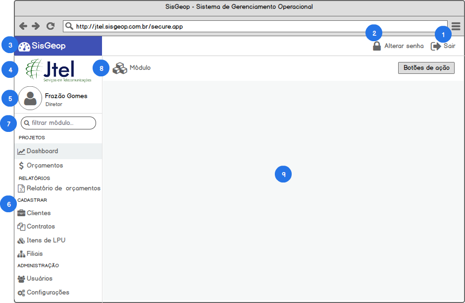

Interface de Usuário#
A interface de usuário do SisGeop será definida de acordo com o protótipo abaixo.
Protótipo#

Especificação#
1. SAIR DO SISTEMA#
QUANDO o usuário clicar no botão Sair
ENTÃO o sistema exibe a seguinte mensagem para o usuário "Deseja realmente sair do sistema?"
CASO o usuário clique no botão Sim
ENTÃO o sistema fecha a sessão do usuário e volta para a tela de Login
2. ALTERAR SENHA#
QUANDO o usuário clicar no botão Alterar senha
ENTÃO o sistema exibe uma janela para o usuário informar sua senha atual, a nova senha e a confirmação da senha
QUANDO o usuário clicar no botão Alterar
ENTÃO o sistema valida o formulário
CASO a senha atual informada seja diferente da senha atual do usuário o sistema exibe a mensagem "Senha atual está incorreta"
CASO a nova senha e a confirmação estejam diferentes o sistema exibe a mensagem "A nova senha e a confirmação estão diferentes"
CASO o formulário seja validado o sistema altera a senha do usuário
E fecha a tela de alteração de senha
E exibe a mensagem "Senha alterada com sucesso"
3. BARRA DE TAREFAS DO SISTEMA#
Na barra de títulos do sistema será exibido o nome, logo e a versão atual do SisGeop.
4. LOGOMARCA DA JTEL#
Abaixo da barra de títulos ficará a logomarca da JTEL.
5. IDENTIFICAÇÃO DO USUÁRIO#
Abaixo da logomarca da JTEL ficará a identificação do usuário logado no SisGeop. A identificação sera composta por:
| Componente | Função |
|---|---|
| Foto | Foto que identifica o usuário que está logado no sistema |
| Nome | Nome do usuário que está logado no sistema |
| Perfil | Perfil de acesso do usuário que está logado no sistema |
6. MENU DA APLICAÇÃO#
O menu da aplicação será estruturado em submódulos que estarão agrupados em módulos de acordo com a correlação das funcionalidades.
| Módulo | Submódulo | Funcionalidade |
|---|---|---|
| Projetos | - | Agrupa os submódulos relacionados ao gerenciamento e acompanhamento de projetos da empresa |
| Projetos | Dashboard | Abre a tela de visualização das informações estatísticas de orçamentos e obras |
| Projetos | Orçamentos | Abre o módulo para criação e gerenciamento dos orçamentos |
| Relatórios | - | Agrupa os submódulos de relatórios do sistema |
| Relatórios | Relatório de orçamentos | Abre a tela de emissão de relatórios relacionados aos orçamentos da empresa |
| Cadastros | - | Agrupa os submódulos de cadastros necessários para a utilização das funcionalidades do SisGeop |
| Cadastros | Clientes | Abre o módulo para gerenciamento dos clientes da JTEL |
| Cadastros | Contratos | Abre o módulo para o gerenciamento dos contratos da JTEL com seus clientes |
| Cadastros | Itens de LPU | Abre o módulo para o gerenciamento dos itens de LPU que serão vinculados aos contratos e orçamentos |
| Cadastros | Filiais | abre o módulo para o gerenciamento das Filiais da JTEL |
| Administração | - | Agrupa os submódulos relacionados às configurações do sistema para a JTEL |
| Administração | Usuários | Abre o módulo para o gerenciamento de usuários que utilizarão o SisGeop |
| Administração | Configurações | Abre o módulo para a configuração de parâmetros e variáveis do SisGeop para a JTEL |
7. FILTRO DE MÓDULO#
QUANDO o usuário digitar no campo Filtrar módulo
ENTÃO o sistema aplica o filtro digitado pelo usuário no menu da aplicação exibindo apenas módulos que combinam com o filtro aplicado pelo usuário
CASO nenhum módulo combine com o filtro
ENTÃO o sistema exibe a mensagem "Nenhum módulo encontrado"_
8. BARRA DE FERRAMENTAS DO MÓDULO#
A barra de Ferramentas do módulo será personalizada de acordo com o módulo em utilização pelo usuário. A barra de ferramenas do módulo irá conter os seguintes componentes:
| Componente | Descrição |
|---|---|
| Título do módulo | Ícone + título de identificação do módulo no sistema, para que o usuário saiba em qual módulo ele está |
| Botões de ação | Botões de ação específicos do módulo utilizado pelo usuário no momento |
9. CONTAINER DO MÓDULO#
A área de container do módulo será onde todos os módulos do sistema serão carregados e exibidos para o usuário ele for acessado através do menu principal ou de botões de ação internamente nos módulos.